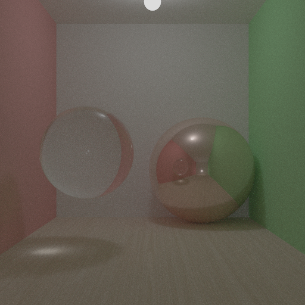
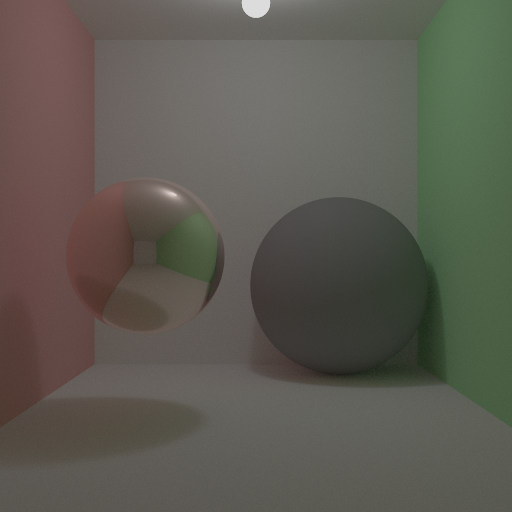

Projects
C++ Path Tracer
- Physically based Monte Carlo path tracer built using Object-Oriented Design, featuring global illumination, multiple importance sampling (MIS), and next event estimation (NEE).
- Implemented an extensible material and geometry system using C++ polymorphism, alongside a BVH acceleration structure for efficient ray-primitive intersection.


CUDA Path Tracer (C++ / CUDA)
- Engineered a GPGPU path tracer using the SIMT execution model, achieving a 50x increase in rays-per-second compared to previous multithreaded CPU implementation.
- Designed 16-byte-aligned structures and SoA memory layouts for coalesced memory access.
- Packed complex geometry and material data into contiguous GPU buffers to reduce host-to-device transfer overhead and kernel latency.


Custom BSDF Plugin – Mitsuba 3 (C++)
- Developed advanced material interfaces to enable atypical light propagation and visual distortion, integrating seamlessly into the Mitsuba 3 rendering pipeline.